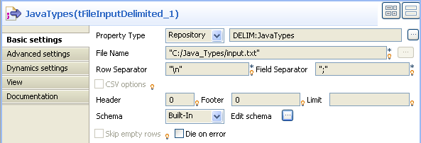
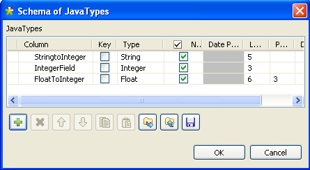

|
Component family |
Processing | |
|
Function |
tConvertType allows specific conversions at run time from one Talend java type to another. | |
|
Purpose |
Helps to automatically convert one Talend java type to another and thus.avoid compiling errors. | |
|
Basic settings |
Schema and Edit Schema |
A schema is a row description, i.e., it defines the number of fields that will be processed and passed on to the next component. The schema is either Built-in or stored remotely in the Repository. Click Edit Schema to make changes to the schema. Note that if you make changes, the schema automatically becomes built-in. |
|
|
|
Built-in: You create and store the schema locally for only the current component. Related topic: see Talend Open Studio User Guide. |
|
|
|
Repository: The schema already exists and is stored in the Repository, hence can be reused in various projects and Job flowcharts. Related topic: see Talend Open Studio User Guide. |
|
|
Auto Cast |
This check box is selected by default. It performs an automatic java type conversion. |
|
|
Manual Cast |
This mode is not visible if the Auto Cast check box is selected. It allows you to precise manually the columns where a java type conversion is needed. |
|
|
Set empty values to Null before converting |
This check box is selected to set the empty values of String or Object type to null for the input data. |
|
|
Die on error |
This check box is selected to kill the Job when an error occurs. |
|
Usage |
This component cannot be used as a start component as it requires an input flow to operate. | |
|
Limitation |
n/a | |
Warning
This scenario is for reference only. If you are using Talend Open Studio for Big Data, the property type and schema of a component are always built-in, which means you have to drop all the required components from the Palette and configure the component property details and schemas manually.
This Java scenario describes a four-component Job where the tConvertType component is used to convert Java types in three columns, and a tMap is used to adapt the schema and have as an output the first of the three columns and the sum of the two others after conversion.
Note
In this scenario, the input schemas for the input delimited file are stored in the repository, you can simply drag and drop the relevant file node from Repository - Metadata - File delimited onto the design workspace to automatically retrieve the tFileInputDelimited component’s setting. For more information, see Talend Open Studio User Guide.
Drop the following components from the Palette onto the design workspace: tConvertType, tMap, and tLogRow.
In the Repository tree view, expand Metadata and from File delimited drag the relevant node, JavaTypes in this scenario, to the design workspace.
The [Components] dialog box displays.
From the component list, select tFileInputDelimited and click Ok.
A tFileInputComponent called Java types displays in the design workspace.
Connect the components using Row > Main links.

Double-click tFileInputDelimited to enter its Basic settings view.
Set Property Type to Repository since the file details are stored in the repository. The fields to follow are pre-defined using the fetched data.
Warning
For Talend Open Studio for Big Data, the Property type, Schema and Query Type of components are always Built-in. For how to edit a Built-in schema, see Talend Open Studio User Guide.
The input file used in this scenario is called input. It is a text file that holds string, integer, and float java types.

Fill in all other fields as needed. For more information, see the section called “tFileInputDelimited”. In this scenario, the header and the footer are not set and there is no limit for the number of processed rows.
Click Edit schema to describe the data structure of this input file. In this scenario, the schema is made of three columns, StringtoInteger, IntegerField, and FloatToInteger.
Click Ok to close the dialog box.
Double-click tConvertType to enter its Basic settings view.

Set Schema Type to Built in, and click Sync columns to automatically retrieve the columns from the tFileInputDelimited component.
Click Edit schema to describe manually the data structure of this processing component.

In this scenario, we want to convert a string type data into an integer type and a float type data into an integer type.
Click OK to close the [Schema of tConvertType] dialog box.
Double-click tMap to open the Map editor.
The Map editor displays the input metadata of the tFileInputDelimited component

In the Schema editor panel of the Map editor, click the plus button of the output table to add two rows and name them as StringToInteger and Sum.
In the Map editor, drag the StringToInteger row from the input table to the StringToInteger row in the output table.
In the Map editor, drag each of the IntegerField and the FloatToInteger rows from the input table to the Sum row in the output table and click OK to close the Map editor.

In the design workspace, select tLogRow and click the Component tab to define its basic settings. For more information, see the section called “tLogRow”.
Press Ctrl+S to save the Job.
Press F6 to execute it.

The string type data is converted into an integer type and displayed in the StringToInteger column on the console. The float type data is converted into an integer and added to the IntegerField value to give the addition result in the Sum column on the console.